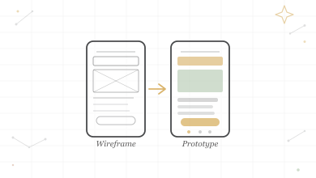
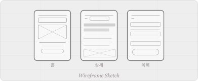
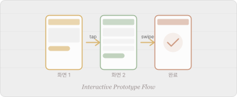

1. Wireframe (와이어프레임)
와이어프레임은 제품의 골격을 그리는 과정입니다. 색상이나 구체적인 그래픽 요소보다는 레이아웃, 정보 구조, 사용자 흐름에 집중하여 설계도면 역할을 수행합니다. 팀원 간의 빠른 구조적 합의를 이끌어내는 데 목적이 있습니다.
와이어프레임과 프로토타입, 어떻게 다를까?

와이어프레임은 제품의 골격을 그리는 과정입니다. 색상이나 구체적인 그래픽 요소보다는 레이아웃, 정보 구조, 사용자 흐름에 집중하여 설계도면 역할을 수행합니다. 팀원 간의 빠른 구조적 합의를 이끌어내는 데 목적이 있습니다.

프로토타입은 실제 사용자와의 상호작용을 테스트하기 위해 만들어진 시제품입니다. 클릭이나 스크롤 같은 동작이 구현되어 있어, 개발 전 단계에서 사용성을 검증하고 문제점을 발견하는 데 매우 효과적입니다.

결론적으로 와이어프레임은 정적인 '설계도'이며, 프로토타입은 동적인 '시제품'이라고 이해하면 쉽습니다. 기획 초기 단계에서는 와이어프레임으로 구조를 잡고, 디자인이 구체화되면 프로토타입으로 검증합니다.